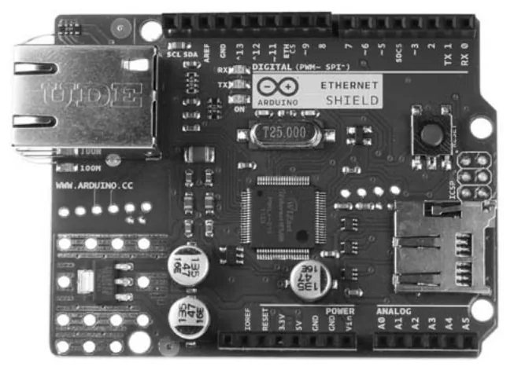
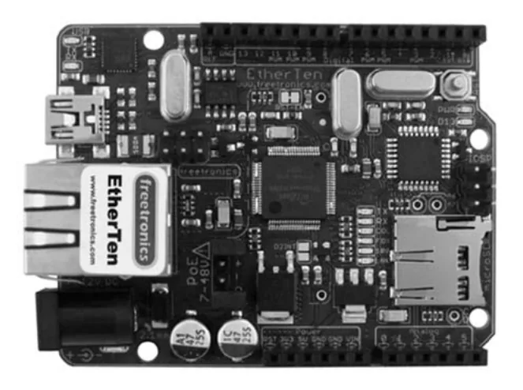

To build these Internet-related projects, you will need some common hardware, cable, and information.
Let’s start with the hardware. You’ll need an Ethernet shield with the W5100 controller chip. You have two options to consider: You can use the genuine Arduino-brand Ethernet shield, as shown in Figure 19-1, or you can use an Arduino Uno–compatible board with integrated Ethernet hardware, such as the Freetronics EtherTen shown in Figure 19-2. The latter is a good choice for new projects or those for which you want to save physical space and money. As you can see, the EtherTen has the connectors for Arduino shields, a USB port, an Ethernet socket, and a microSD card socket.


Regardless of your choice of hardware, you’ll also need a standard 10/100 CAT5, CAT5E, or CAT6 network cable to connect your Ethernet shield to your network router or Internet modem.
In addition, you’ll need the IP address of your network’s router gateway or modem, which should look something like this: 192.168.0.1. You’ll also need your computer’s IP address in the same format as your router’s IP address.
Finally, if you want to communicate with your Arduino from outside your home or local area network, you’ll need a static, public IP address. A static IP address is a fixed address assigned to your physical Internet connection by your Internet service provider (ISP). Your Internet connection may not have a static IP address by default; contact your ISP to have this activated if necessary. If your ISP cannot offer a static IP or if it costs too much, you can get one through a third-party company, such as no-ip (http:// www.noip.com/) or Dyn (http://dyn.com/dns/). They can set you up with a web address that does not change and will divert users to your current IP address.
Now let’s put our hardware to the test with a simple project.